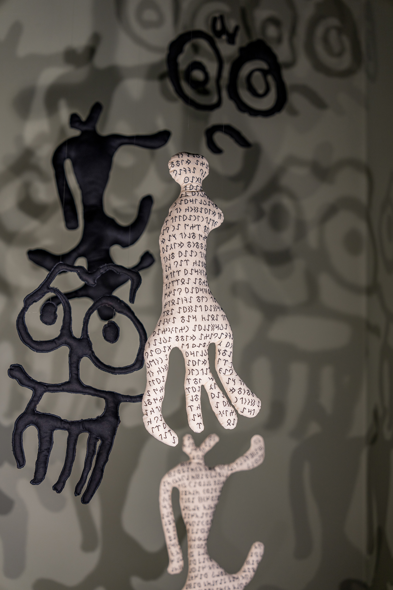

The Inquiries & Uprisings
Connected Series
2024 | Special Viewing Room
"Susturulmuş umutlar, cevapsız sorular ve isyan bayrakları..."
A special series of interconnected narratives exploring silenced voices, unanswered inquiries, and the ossified uprisings of our time.
Enter Viewing Room ⟶

Overcome
Geldiler
2024 | Installation | RE-
Kaç gün daha susabilirim? Sustukça sesim daha da kısılıyor…
How many more days can I remain silent? The more I remain silent, the quieter my voice becomes...

Tunnel of Time
Zaman Tüneli
2024 | 156x55 cm | Baselected
Başının ve sonunun ölçülemez uzaklıkta olduğu bir tünelde kaç biçimde var olduk?
In a tunnel where the beginning and end are immeasurably distant, in how many forms did we exist?

ID
Vesika
2024 | 100x125 cm | RE-
“Köyümüzde her yıl, ayin öncesi nüfus sayımı yapılır.”
"Each year in our village, a census is taken before the ritual."